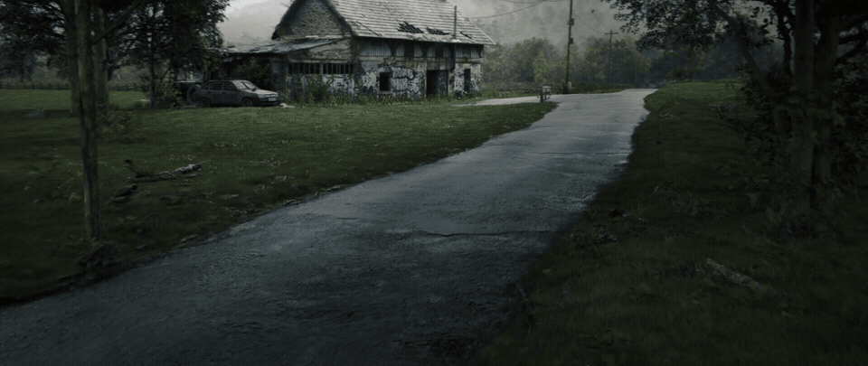

Blender、RealityScan、UE5、Nukeを使ったシーン制作のチュートリアル。Houdiniとは異なるワークフローだが、背景制作に通じる部分が多いとしている。
URL
https://juliencgi.gumroad.com/l/foggybarn

Blender、RealityScan、UE5、Nukeを使ったシーン制作のチュートリアル。Houdiniとは異なるワークフローだが、背景制作に通じる部分が多いとしている。